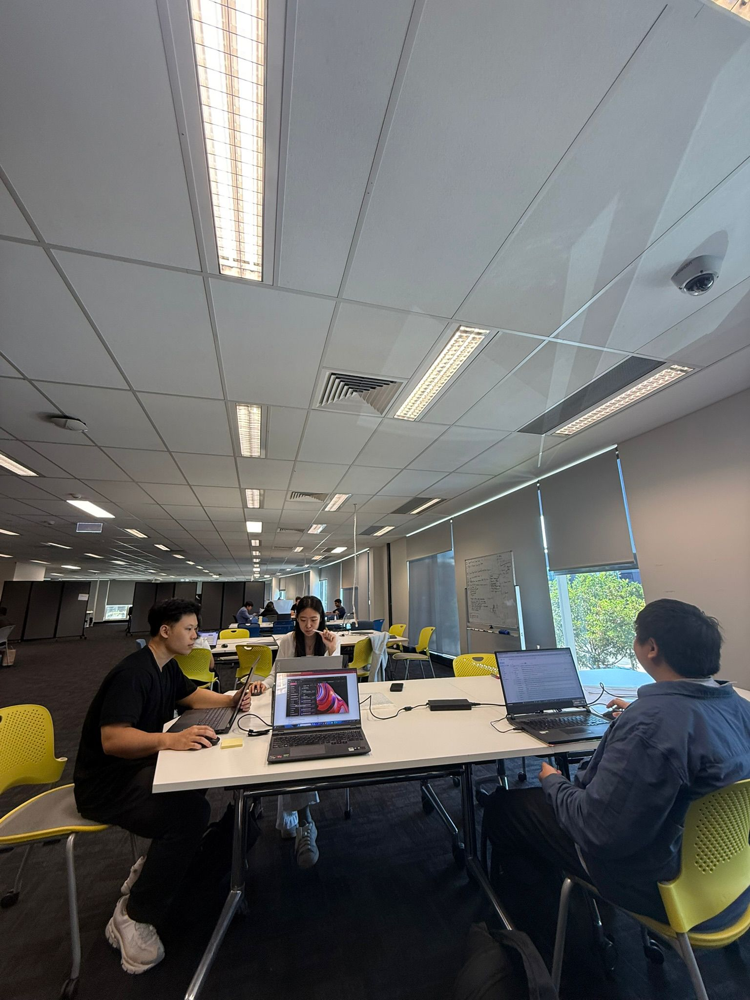
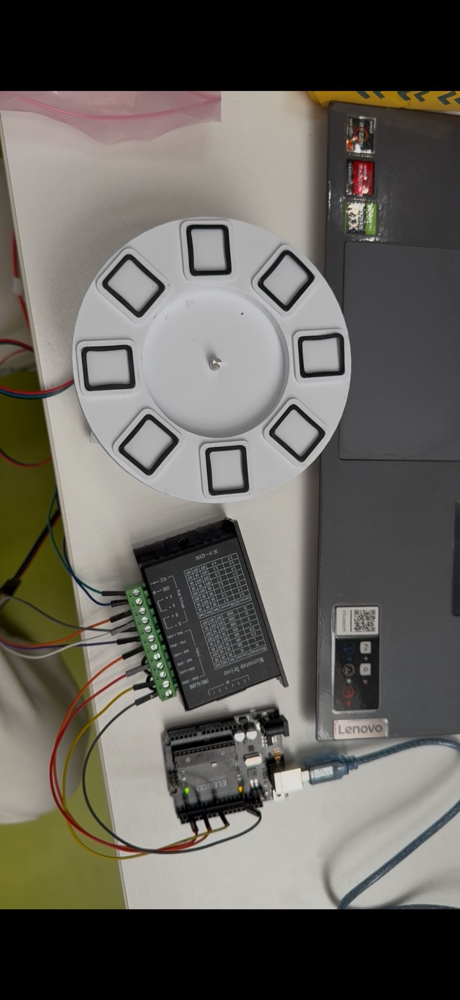
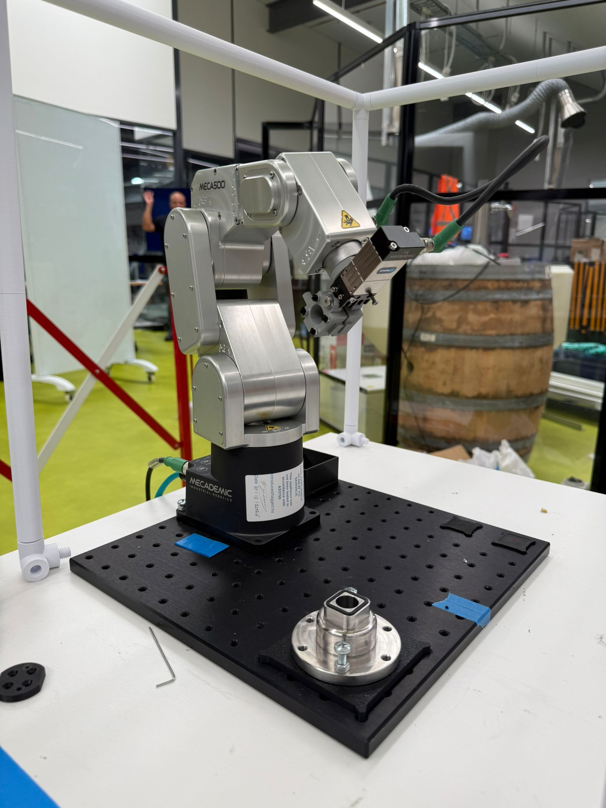

Internship Reflection
My internship at Optik Consultancy, located at UTS Tech Lab in Botany, gave me valuable experience in a real engineering environment and helped me better understand teamwork, technical contribution, and professional growth.
← Back to Home


Expectations and Reality
Before beginning my internship, I expected to be exposed to a structured engineering environment where I could apply my academic knowledge in practice. While the environment was less formal than anticipated, it still provided valuable insight into how engineering work is carried out in real project settings.
Key Lessons
One of the key lessons I gained from this experience was the importance of effective teamwork and professional relationships. Building connections and maintaining good communication within a team significantly influences both productivity and overall project outcomes.
My Value Proposition
I see my value as a team member in my ability to adapt, support others, and contribute across different areas when needed. While I am still developing technically, I am able to assist in design, coding, and coordination tasks while maintaining a positive and cooperative approach.
Future Career Direction
This internship changed my perspective on engineering as a career. It showed me the impact of working on real projects and increased my interest in robotics and automation. It also reinforced my preference for hands-on, team-based engineering environments.